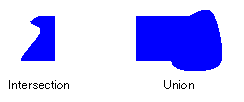
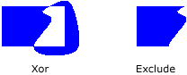

Области в GDI+
Регион – часть области отображения устройства вывода. Регионах может быть простое (один прямоугольник) или сложными (набор многоугольников и замкнутых кривых). На следующем рисунке показано два региона: один создан на основе прямоугольника, а другой создан на основе пути.
Использование областей
Области часто используются для обрезки и проверка нажатия. Обрезка заключается ограничение Рисование определенной области отображаемой области, обычно это область, необходимо обновить. Проверка попадания включает в себя проверку, чтобы определить, находится ли курсор в определенной области экрана при нажатии кнопки мыши.
Можно создать область от прямоугольника или путь. Можно также создавать сложные области путем объединения существующих областей. Region Класс предоставляет следующие методы для объединения областей: Intersect, Union, Xor, Exclude, и Complement.
Пересечение двух областей — набор всех точек, которые находятся в обоих регионах. Объединение — это набор всех точек, принадлежащих одной или другой или обоих регионах. Дополнение области — это набор всех точек, которые не находятся в регионе. На следующем рисунке пересечение и объединение двух областей, показанный на предыдущем рисунке.

Xor , Примененный к паре регионов, создается область, содержащую все точки, принадлежащие к одной области или другой, но не оба. Exclude Метод, примененный к паре областей, выдает область, содержащую все точки в первом регионе, которые не являются второго региона. На следующем рисунке показан регионов, возникающие в результате применения Xor и Exclude методы в двух регионах, приведенном в начале этого раздела.

Для заполнения области, вам потребуется Graphics объекта, Brush объекта и Region объекта. Graphics Предоставляет FillRegion метод и Brush объект сохраняет атрибуты, такие как цвета или узора заливки. Следующий пример заполняет область сплошным цветом.
myGraphics.FillRegion(mySolidBrush, myRegion);